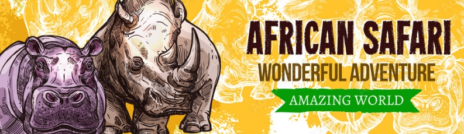
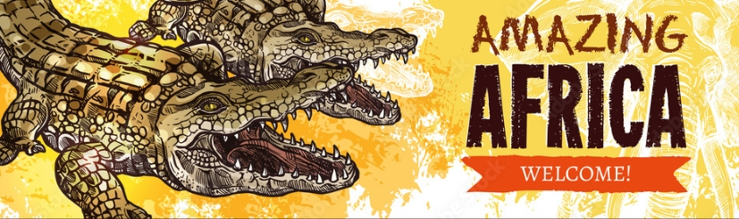

ARE YOU STRUGGLING TO DECIDE ON YOUR NEXT DESTINATION TO EXPLORE THE AFRICAN CONTINENT? In this webisite we wiil help you to decide on your next destination by displaying visual imagine and text of different in southern African countries.This website also recommends comfortable and luxurious accomodations that accomodate you during your visit. the images and content that is displyed in this website will be of places you might find interest in. this also includes places with four to five star ratings.
HISTORY OF THE ORGANISATION.

AFRICAN, a continent known for it,s beauty in nature, has an incredible remarkable record of wildlife including the big five, many different cultures, marks of historical events and being rich in valuable minerals. Having all this beauty, this makes it to be a place whereby attracts tourist all over the world, for them to witness the beauty of African and not to be just told or just hear about it.
MISSION.
Our mission is to promote sustainable and responsible tourism in Southern Africa by providing information, raising awareness, offering tour giudes and offer an overview of all places that would be interest in visiting , celebrate cultural diversity, and improve the livelihoods of local communities.
VISION.

The vision of the creation of AFRICA UNCOVERED is to position Southern Africa as a world-renowned destination for sustainable tourism by showcasing its unique landscapes, rich cultural heritage, and diverse wildlife, while empowering local communities and preserving the region's natural and cultural resources for future generations.